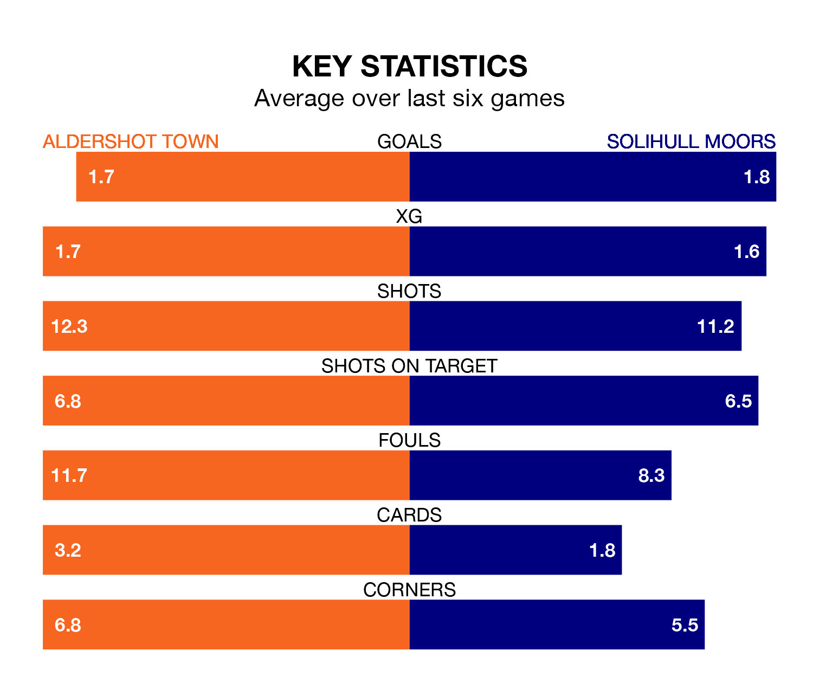

Aldershot Town host Solihull Moors on Saturday at the Electrical Services Stadium in the National League.
In their last league match, on March 16, Aldershot lost to York City 1-0 away.
Solihull Moors drew, 1-1 away at Dorking Wanderers, with Tahvon Campbell scoring their goals.
With 68 goals in 39 games so far this season, Aldershot are scoring more than average in the league with 1.7 goals per game. But they are conceding more than average too, letting in 69 goals at a rate of 1.8 per game.
Solihull Moors are also above average scorers, with 1.6 goals per game, compared to a league average of 1.5. They have conceded 1.4 goals per game.
In the last 10 years, Aldershot and Solihull Moors have played each other on 15 occasions. Aldershot won six of them, Solihull Moors eight, and they drew once.
On average, the Shots scored 1.1 goals and the Moors 1.4 in those matches.
Their last meeting was on October 7, when Aldershot won 1-0 away.
The Moors are fourth in the table after 39 games, of which they have won 18 and drawn 11, earning 65 points.
Town are one place behind the visitors in fifth, with 19 wins and six draws putting them on 63 points.
The Shots are in reasonable form in the National League, with four wins and two losses from their last six games.
With three wins and two draws over that period, Solihull Moors's form is slightly worse – they have taken 11 points from 18, compared to the home team's 12.
Updated: 10:19 (UTC), 22/03/24